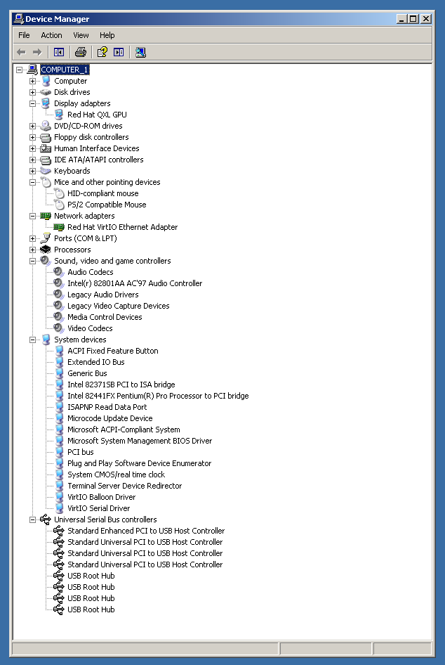
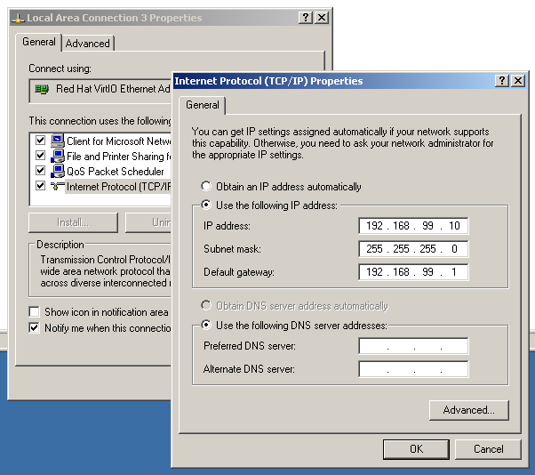
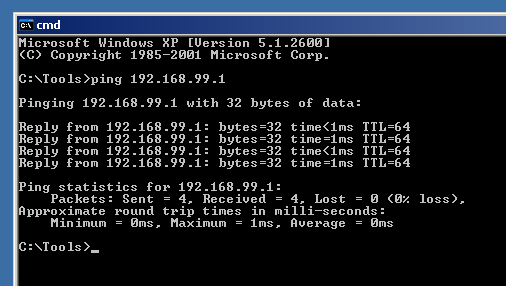
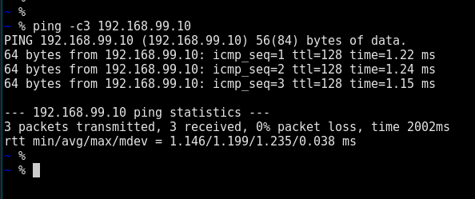

QEMU emulator version 8.1.3
Copyright (c) 2003-2023 Fabrice Bellard and the QEMU Project developers
spicy 0.42
#!/bin/sh
set -eu
LOCAL_INTERFACE=tap99
LOCAL_IP=192.168.99.1
if ! ip link show "${LOCAL_INTERFACE}"; then
ip tuntap add "${LOCAL_INTERFACE}" mode tap
ip addr flush dev "${LOCAL_INTERFACE}"
ip link set "${LOCAL_INTERFACE}" up
ip address add "${LOCAL_IP}" dev "${LOCAL_INTERFACE}"
ip route add 192.168.99.0/24 dev tap99
fi
#!/bin/sh
set -eu
LOCAL_INTERFACE=tap99
LOCAL_IP=192.168.99.1
if ip link show "${LOCAL_INTERFACE}"; then
ip link set "${LOCAL_INTERFACE}" down
ip link delete "${LOCAL_INTERFACE}"
fi
ip link show dev tap99
ip -brief link
ip -brief addr
ip route
#!/bin/sh
set -eu
set --
set -- "$@" -machine 'pc-i440fx-8.1,usb=off,vmport=off,dump-guest-core=off,memory-backend=pc.ram,hpet=off,acpi=on'
set -- "$@" -accel 'kvm'
set -- "$@" -cpu 'host,migratable=on'
set -- "$@" -m 'size=2097152k'
set -- "$@" -object '{"qom-type":"memory-backend-ram","id":"pc.ram","size":2147483648}'
set -- "$@" -overcommit 'mem-lock=off'
set -- "$@" -smp '2,sockets=2,cores=1,threads=1'
set -- "$@" -netdev '{"type":"tap","ifname":"tap99","id":"tapnet99","script":"no","downscript":"no"}'
set -- "$@" -device '{"driver":"virtio-net-pci","netdev":"tapnet99","id":"net0","mac":"52:54:00:69:c7:22"}'
set -- "$@" -spice port=5900,addr=127.0.0.1,disable-ticketing=on
set -- "$@" -device virtio-serial -chardev spicevmc,id=vdagent,debug=0,name=vdagent
set -- "$@" -device virtserialport,chardev=vdagent,name=com.redhat.spice.0
set -- "$@" -audiodev '{"id":"audio1","driver":"spice"}'
set -- "$@" -device '{"driver":"AC97","id":"sound0","audiodev":"audio1"}'
set -- "$@" -name winxpsp3x86
set -- "$@" -monitor stdio
set -- "$@" -boot order=dc
set -- "$@" -vga qxl
exec qemu-system-x86_64 "$@" /libvirt-storage/winxp_sp3_x86_vs6sp6.qcow2
nofake-exec.sh --error -Rrun.sh -orun.sh README.txt -- sh -eu
spicy -h 127.0.0.1 -p 5900 --title 'winxpsp3x86'




More details in the link below.
This page was last modified on March 18, 2024 at 14:56:59 UTC.